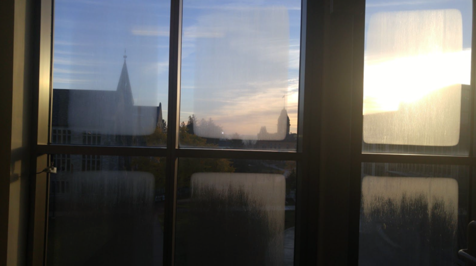
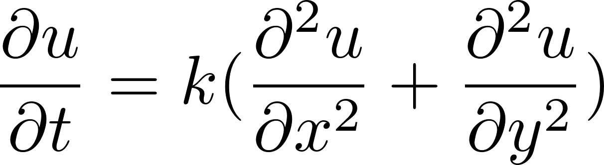
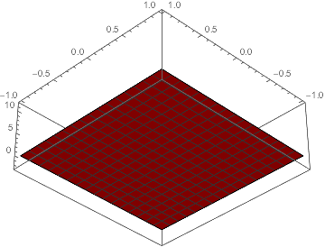
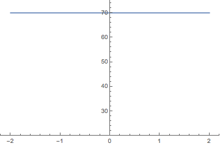
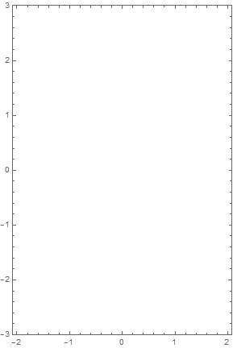

Modeling Geometric Dew Decay
16.12.2016
This last semester I took Partial Differential Equations at St. Olaf, and like many classes, there was a final project involved. Rather than look at a specific PDE or application, my group decided to directly apply what we had learned and generate some new content.
Our professor, Dr. Joe Benson, came into work at the St. Olaf Regents Hall of Mathematics one fall morning and happened to notice these peculiar dew formations, and like any good mathematician wondered if there was a way to model the formation. Seeing that our final project group was composed of physics students, he gave us the challenge of modeling the shape of the dew formations using PDEs.
Our first task was determining the factors that contribute to dew formation and dew decay on a window pane. As it turns out, not many people have published papers on window dew formation at a macroscopic level (lots of papers on how to design a building to minimize dew formation on windows, though). Ultimately, we primarily relied on meteorology sources to conclude that dew formation depends on humidity and temperature primarily, but those are also dependent on air pressure, wind, sunlight, etc. Like good physicists, we decided that we can ignore most of these specifics under some assumptions - namely that the conditions are suitable for dew formation.
We elected to use the ever-famous heat equation as the basis of our model.
We created a conveniently square window that began at a low temperature and applied a constant temperature to the boundaries. Quickly plug that into Mathematica and out comes a very lovely animation!
We were thrilled to see this. However, it produces more of a circular dew pattern than a rectangular one, so we decided improve our model. We focused the temperature distribution in the metal frame that surrounds the window. Specifically, our model is based on the metal having 3 distinct areas: 1) where the metal is outside the window, 2) where the metal is perfectly in contact with the glass plane and 3) where the metal is inside the window. We argue that the temperature outside the window changes approximately sinusoidally as the sun rises and sets and the temperature on the inside is constant due to air conditioning or a heater. Our model sets up a one dimensional heat equation with these parameters, where there is a function connecting the two such that everything is continuous. It ends up looking something like this (where from left to right is outside to inside):
Each region (the boundaries are at -1 and 1) has a k value proportional to that material, which we acquired from hyperphysic's helpful page of thermal constants. We then took the center value of the above function at each instant and applied it to the boundaries of our 2D plane, and the results are excellent.

The temperature changes in a much more rectangular fashion, which is consistent with our model. If we take a threshold value (for which dew evaporates), we can see the pattern emerge a little bit more clearly. Since this is a very simple model, we also change the shape of our 2D plane to be rectangular to better match the initial picture.
As expected, this matches the original pictures almost perfectly. We also think that as time progresses, the dew formation would grow more circular as depicted above, but it was winter by the time we did the project and we were unfortunately unable to find any dew in snowy Minnesota.